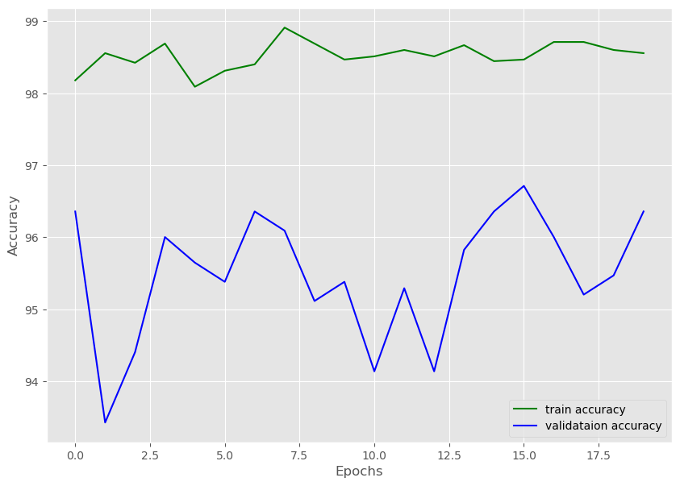
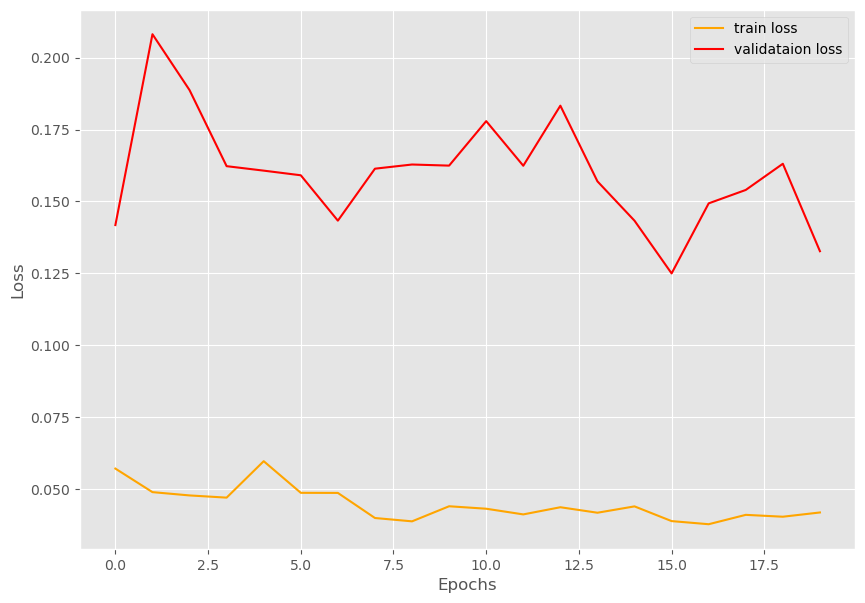
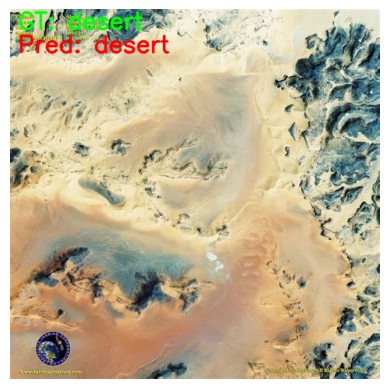

import torch
import argparse
import torch.nn as nn
import torch.optim as optim
import argparse
import cv2
from matplotlib import pyplot as pltSatellite Images Classification
Import the required libraries
import warnings
warnings.filterwarnings(action='ignore')from model import build_model
from utils import save_model, save_plots
from datasets import train_loader, valid_loader, dataset
from tqdm.notebook import tqdmClasses: ['cloudy', 'desert', 'green_area', 'water']
Total number of images: 5631
Total training images: 4505
Total valid_images: 1126Load the weights for Reset Model
lr = 0.001
epochs = 20
device = ('cuda' if torch.cuda.is_available() else 'cpu')
print(f"computation device: {device}\n")computation device: cuda
model = build_model(
pretrained=True, fine_tune=False, num_classes=len(dataset.classes)).to(device)
# total parameters and trainable parameters
total_params = sum(p.numel() for p in model.parameters())
print(f"{total_params:,} total parameters.")
total_trainable_params = sum(
p.numel() for p in model.parameters() if p.requires_grad)
print(f"{total_trainable_params:,} training parameters.\n")[INFO]: Loading pre-trained weights
[INFO]: Freezing hidden layers...
21,286,724 total parameters.
2,052 training parameters.
# optimizer
optimizer = optim.Adam(model.parameters(), lr=lr)
# loss function
criterion = nn.CrossEntropyLoss()Training and Validation Functions
def train(model, trainloader, optimizer, criterion):
model.train()
print('Training')
train_running_loss = 0.0
train_running_correct = 0
counter = 0
for i, data in tqdm(enumerate(trainloader), total=len(trainloader)):
counter += 1
image, labels = data
image = image.to(device)
labels = labels.to(device)
optimizer.zero_grad()
# forward pass
outputs = model(image)
# calculate the loss
loss = criterion(outputs, labels)
train_running_loss += loss.item()
# calculate the accuracy
_, preds = torch.max(outputs.data, 1)
train_running_correct += (preds == labels).sum().item()
# backpropagation
loss.backward()
# update the optimizer parameters
optimizer.step()
# loss and accuracy for the complete epoch
epoch_loss = train_running_loss / counter
epoch_acc = 100. * (train_running_correct / len(trainloader.dataset))
return epoch_loss, epoch_accdef validate(model, testloader, criterion, class_names):
model.eval()
print('Validation')
valid_running_loss = 0.0
valid_running_correct = 0
counter = 0
# we need two lists to keep track of class-wise accuracy
class_correct = list(0. for i in range(len(class_names)))
class_total = list(0. for i in range(len(class_names)))
with torch.no_grad():
for i, data in tqdm(enumerate(testloader), total=len(testloader)):
counter += 1
image, labels = data
image = image.to(device)
labels = labels.to(device)
# forward pass
outputs = model(image)
# calculate the loss
loss = criterion(outputs, labels)
valid_running_loss += loss.item()
# calculate the accuracy
_, preds = torch.max(outputs.data, 1)
valid_running_correct += (preds == labels).sum().item()
# calculate the accuracy for each class
correct = (preds == labels).squeeze()
for i in range(len(preds)):
label = labels[i]
class_correct[label] += correct[i].item()
class_total[label] += 1
# loss and accuracy for the complete epoch
epoch_loss = valid_running_loss / counter
epoch_acc = 100. * (valid_running_correct / len(testloader.dataset))
# print the accuracy for each class after every epoch
print('\n')
for i in range(len(class_names)):
print(f"Accuracy of class {class_names[i]}: {100*class_correct[i]/class_total[i]}")
print('\n')
return epoch_loss, epoch_accTrain for 20 Epochs
# lists to keep track of losses and accuracies
train_loss, valid_loss = [], []
train_acc, valid_acc = [], []
# start the training
for epoch in range(epochs):
#print(f"[INFO]: Epoch {epoch+1} of {epochs}")
train_epoch_loss, train_epoch_acc = train(model, train_loader,
optimizer, criterion)
valid_epoch_loss, valid_epoch_acc = validate(model, valid_loader,
criterion, dataset.classes)
train_loss.append(train_epoch_loss)
valid_loss.append(valid_epoch_loss)
train_acc.append(train_epoch_acc)
valid_acc.append(valid_epoch_acc)
print(f"Training loss: {train_epoch_loss:.3f}, training acc: {train_epoch_acc:.3f}")
print(f"Validation loss: {valid_epoch_loss:.3f}, validation acc: {valid_epoch_acc:.3f}")
print('-'*50)
# save the trained model weights
save_model(epochs, model, optimizer, criterion)
# save the loss and accuracy plots
save_plots(train_acc, valid_acc, train_loss, valid_loss)
print('TRAINING COMPLETE')TrainingValidation
Accuracy of class cloudy: 99.05660377358491
Accuracy of class desert: 95.57522123893806
Accuracy of class green_area: 96.53979238754326
Accuracy of class water: 93.8566552901024
Training loss: 0.057, training acc: 98.180
Validation loss: 0.142, validation acc: 96.359
--------------------------------------------------
TrainingValidation
Accuracy of class cloudy: 99.37106918238993
Accuracy of class desert: 92.92035398230088
Accuracy of class green_area: 97.57785467128028
Accuracy of class water: 83.2764505119454
Training loss: 0.049, training acc: 98.557
Validation loss: 0.208, validation acc: 93.428
--------------------------------------------------
TrainingValidation
Accuracy of class cloudy: 99.05660377358491
Accuracy of class desert: 96.90265486725664
Accuracy of class green_area: 96.88581314878893
Accuracy of class water: 84.98293515358361
Training loss: 0.048, training acc: 98.424
Validation loss: 0.189, validation acc: 94.405
--------------------------------------------------
TrainingValidation
Accuracy of class cloudy: 99.05660377358491
Accuracy of class desert: 98.23008849557522
Accuracy of class green_area: 95.50173010380622
Accuracy of class water: 91.46757679180887
Training loss: 0.047, training acc: 98.690
Validation loss: 0.162, validation acc: 96.004
--------------------------------------------------
TrainingValidation
Accuracy of class cloudy: 98.74213836477988
Accuracy of class desert: 97.78761061946902
Accuracy of class green_area: 89.96539792387543
Accuracy of class water: 96.24573378839591
Training loss: 0.060, training acc: 98.091
Validation loss: 0.161, validation acc: 95.648
--------------------------------------------------
TrainingValidation
Accuracy of class cloudy: 98.11320754716981
Accuracy of class desert: 98.67256637168141
Accuracy of class green_area: 96.88581314878893
Accuracy of class water: 88.39590443686006
Training loss: 0.049, training acc: 98.313
Validation loss: 0.159, validation acc: 95.382
--------------------------------------------------
TrainingValidation
Accuracy of class cloudy: 99.05660377358491
Accuracy of class desert: 97.34513274336283
Accuracy of class green_area: 97.92387543252595
Accuracy of class water: 91.12627986348123
Training loss: 0.049, training acc: 98.402
Validation loss: 0.143, validation acc: 96.359
--------------------------------------------------
TrainingValidation
Accuracy of class cloudy: 99.05660377358491
Accuracy of class desert: 97.78761061946902
Accuracy of class green_area: 93.77162629757785
Accuracy of class water: 93.8566552901024
Training loss: 0.040, training acc: 98.912
Validation loss: 0.161, validation acc: 96.092
--------------------------------------------------
TrainingValidation
Accuracy of class cloudy: 99.05660377358491
Accuracy of class desert: 92.47787610619469
Accuracy of class green_area: 96.19377162629758
Accuracy of class water: 91.80887372013652
Training loss: 0.039, training acc: 98.690
Validation loss: 0.163, validation acc: 95.115
--------------------------------------------------
TrainingValidation
Accuracy of class cloudy: 99.05660377358491
Accuracy of class desert: 96.90265486725664
Accuracy of class green_area: 96.19377162629758
Accuracy of class water: 89.419795221843
Training loss: 0.044, training acc: 98.468
Validation loss: 0.162, validation acc: 95.382
--------------------------------------------------
TrainingValidation
Accuracy of class cloudy: 97.48427672955975
Accuracy of class desert: 98.67256637168141
Accuracy of class green_area: 87.5432525951557
Accuracy of class water: 93.51535836177474
Training loss: 0.043, training acc: 98.513
Validation loss: 0.178, validation acc: 94.139
--------------------------------------------------
TrainingValidation
Accuracy of class cloudy: 98.42767295597484
Accuracy of class desert: 98.67256637168141
Accuracy of class green_area: 88.23529411764706
Accuracy of class water: 96.24573378839591
Training loss: 0.041, training acc: 98.602
Validation loss: 0.162, validation acc: 95.293
--------------------------------------------------
TrainingValidation
Accuracy of class cloudy: 99.05660377358491
Accuracy of class desert: 98.23008849557522
Accuracy of class green_area: 86.85121107266436
Accuracy of class water: 92.83276450511946
Training loss: 0.044, training acc: 98.513
Validation loss: 0.183, validation acc: 94.139
--------------------------------------------------
TrainingValidation
Accuracy of class cloudy: 99.05660377358491
Accuracy of class desert: 97.34513274336283
Accuracy of class green_area: 94.80968858131487
Accuracy of class water: 92.15017064846417
Training loss: 0.042, training acc: 98.668
Validation loss: 0.157, validation acc: 95.826
--------------------------------------------------
TrainingValidation
Accuracy of class cloudy: 99.05660377358491
Accuracy of class desert: 98.67256637168141
Accuracy of class green_area: 92.38754325259515
Accuracy of class water: 95.56313993174061
Training loss: 0.044, training acc: 98.446
Validation loss: 0.143, validation acc: 96.359
--------------------------------------------------
TrainingValidation
Accuracy of class cloudy: 99.05660377358491
Accuracy of class desert: 97.78761061946902
Accuracy of class green_area: 96.53979238754326
Accuracy of class water: 93.51535836177474
Training loss: 0.039, training acc: 98.468
Validation loss: 0.125, validation acc: 96.714
--------------------------------------------------
TrainingValidation
Accuracy of class cloudy: 99.05660377358491
Accuracy of class desert: 96.90265486725664
Accuracy of class green_area: 95.15570934256056
Accuracy of class water: 92.83276450511946
Training loss: 0.038, training acc: 98.713
Validation loss: 0.149, validation acc: 96.004
--------------------------------------------------
TrainingValidation
Accuracy of class cloudy: 98.74213836477988
Accuracy of class desert: 98.67256637168141
Accuracy of class green_area: 89.27335640138408
Accuracy of class water: 94.53924914675768
Training loss: 0.041, training acc: 98.713
Validation loss: 0.154, validation acc: 95.204
--------------------------------------------------
TrainingValidation
Accuracy of class cloudy: 99.37106918238993
Accuracy of class desert: 97.78761061946902
Accuracy of class green_area: 96.19377162629758
Accuracy of class water: 88.73720136518772
Training loss: 0.040, training acc: 98.602
Validation loss: 0.163, validation acc: 95.471
--------------------------------------------------
TrainingValidation
Accuracy of class cloudy: 99.05660377358491
Accuracy of class desert: 97.78761061946902
Accuracy of class green_area: 97.2318339100346
Accuracy of class water: 91.46757679180887
Training loss: 0.042, training acc: 98.557
Validation loss: 0.133, validation acc: 96.359
--------------------------------------------------
TRAINING COMPLETE

Inference
import torch
import cv2
import torchvision.transforms as transforms
from model import build_modeldevice = 'cpu'# list containing all the labels
labels = ['cloudy', 'desert', 'green_area', 'water']
# initialize the model and load the trained weights
model = build_model(
pretrained=False, fine_tune=False, num_classes=4
).to(device)
print('[INFO]: Loading custom-trained weights...')
checkpoint = torch.load('outputs/model.pth', map_location=device)
model.load_state_dict(checkpoint['model_state_dict'])
model.eval()
# define preprocess transforms
transform = transforms.Compose([
transforms.ToPILImage(),
transforms.Resize(224),
transforms.ToTensor(),
transforms.Normalize(
mean=[0.485, 0.456, 0.406],
std=[0.229, 0.224, 0.225]
)
]) [INFO]: Not loading pre-trained weights
[INFO]: Freezing hidden layers...
[INFO]: Loading custom-trained weights...def inference(input):
# read and preprocess the image
image = cv2.imread(input)
# get the ground truth class
gt_class = input.split('/')[-1].split('.')[0]
orig_image = image.copy()
# convert to RGB format
image = cv2.cvtColor(image, cv2.COLOR_BGR2RGB)
image = transform(image)
# add batch dimension
image = torch.unsqueeze(image, 0)
with torch.no_grad():
outputs = model(image.to(device))
output_label = torch.topk(outputs, 1)
pred_class = labels[int(output_label.indices)]
cv2.putText(orig_image,
f"GT: {gt_class}",
(10, 25),
cv2.FONT_HERSHEY_SIMPLEX,
1, (0, 255, 0), 2, cv2.LINE_AA
)
cv2.putText(orig_image,
f"Pred: {pred_class}",
(10, 55),
cv2.FONT_HERSHEY_SIMPLEX,
1, (0, 0, 255), 2, cv2.LINE_AA
)
print(f"GT: {gt_class}, pred: {pred_class}")
#image = cv2.imshow('Result', orig_image)
rgb_image = cv2.cvtColor(orig_image,cv2.COLOR_BGR2RGB)
fig = plt.figure()
plt.axis('off')
plt.grid(b=None)
plt.imshow(rgb_image)
cv2.imwrite(f"outputs/{gt_class}.png",
orig_image)inference(input='input/test_data/cloudy.jpeg')GT: cloudy, pred: cloudyinference(input='input/test_data/desert.jpeg')GT: desert, pred: desert